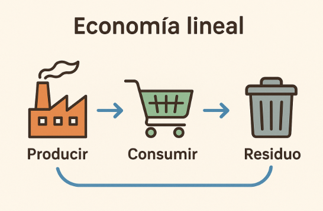
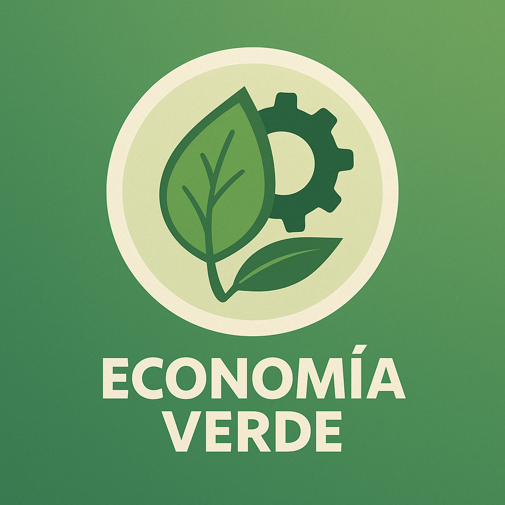
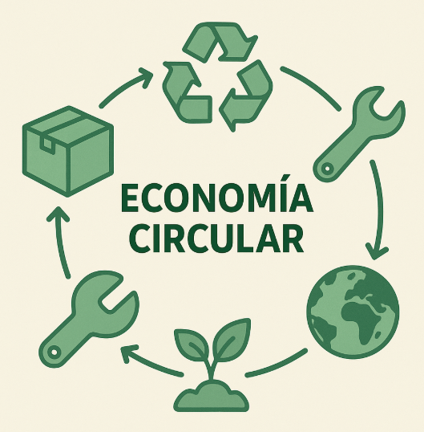
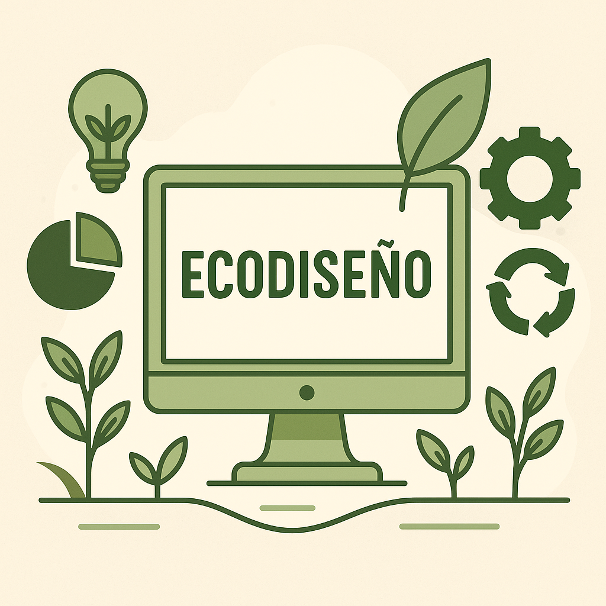
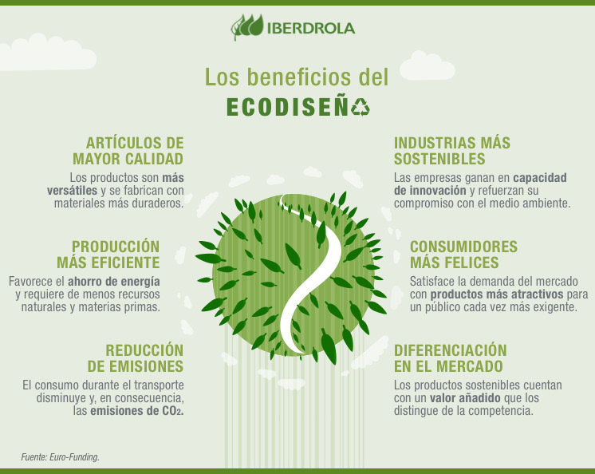
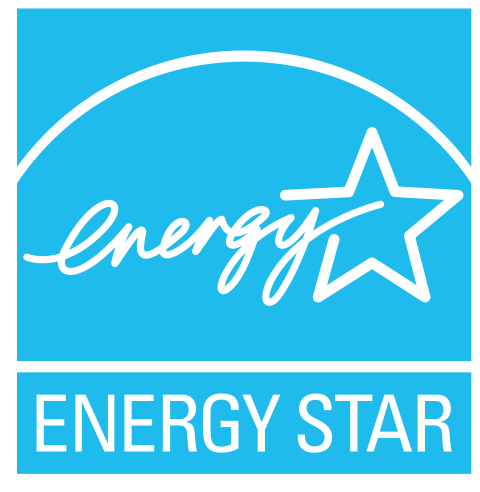
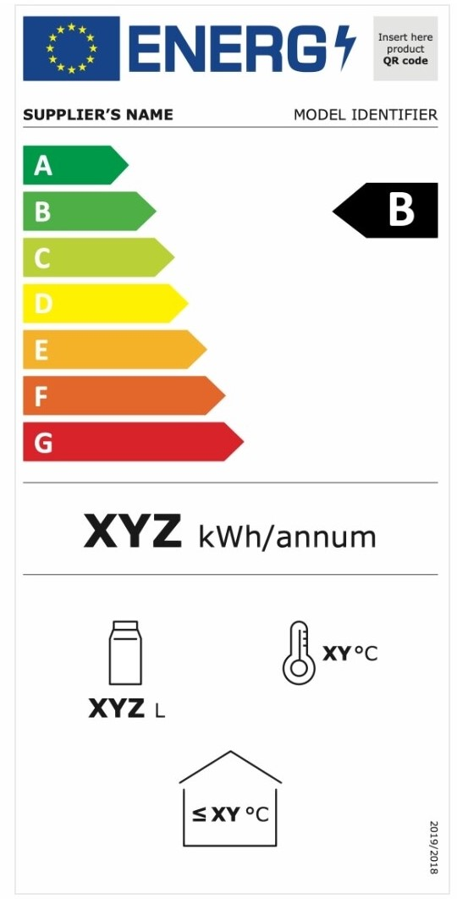
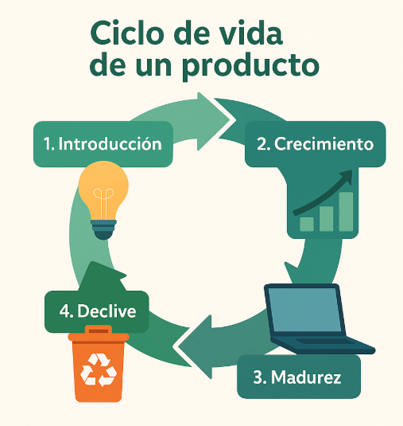

UD4. Economía circular
Índice
El modelo lineal
El modelo de producción y consumo dominante en las últimas décadas es el llamado modelo lineal. En este modelo los recursos se producen, se consumen y luego se desechan como residuos, sin considerar su reutilización o reciclaje, generando un alto impacto ambiental y desperdicio de materiales.

El modelo lineal ha permitido un crecimiento económico global, impulsando la industrialización, el comercio y el acceso masivo a bienes de consumo. Sin embargo, también ha contribuido a la sobreexplotación de recursos, el aumento de residuos (especialmente electrónicos y plásticos), y la intensificación de problemas ambientales como el cambio climático, la contaminación y la pérdida de biodiversidad.
Características principales del modelo lineal
Alta dependencia de recursos naturales
Requiere grandes cantidades de materias primas (minerales, energía fósil, agua), muchas de ellas limitadas o no renovables.
Producción intensiva
Se prioriza la cantidad, la rapidez y el bajo coste frente a la durabilidad o el impacto ambiental de los productos.
Obsolescencia programada y percibida
Muchos productos están diseñados para tener una vida útil limitada o para parecer anticuados rápidamente, especialmente en el sector tecnológico.
Consumo acelerado
El sistema impulsa el consumo constante (nuevas versiones de móviles, ordenadores, electrodomésticos...), muchas veces innecesario.
Generación masiva de residuos
Se generan toneladas de residuos sólidos, entre ellos gran cantidad de residuos electrónicos (RAEE), que a menudo no se reciclan adecuadamente.
Escasa reutilización y reciclaje
Los productos rara vez están diseñados para facilitar su reparación o reutilización. Muchos materiales valiosos se pierden al no reciclarse.
Impacto ambiental elevado
Este modelo contribuye a problemas graves como el cambio climático, la contaminación y la pérdida de biodiversidad.
¿Por qué es importante entender este modelo?
Comprender cómo funciona (Producir ➜ Consumir ➜ Residuo) nos ayuda a detectar sus debilidades y a plantear alternativas más sostenibles, como la economía circular y el ecodiseño.
Ejemplo
Un portátil usado por una empresa durante solo 2 años puede terminar como residuo electrónico si no se reutiliza o recicla correctamente. En cambio, si se recondiciona y revende, se alarga su ciclo de vida y se reduce su huella ecológica.
Economía verde
La economía verde es un modelo de desarrollo económico que busca mejorar el bienestar humano y la equidad social, al tiempo que reduce significativamente los riesgos ambientales y la escasez ecológica. Está enfocada en la transición ecológica de los sectores productivos, incluyendo el sector TIC.

Principios clave de la economía verde
Eficiencia en el uso de los recursos
Utilizar materias primas y energía de forma optimizada para minimizar el desperdicio y maximizar la productividad.
Ejemplo
Uso de algoritmos de bajo consumo energético o hardware eficiente que prolonga la vida útil de los equipos.
Reducción de emisiones y residuos
Disminuir la contaminación ambiental mediante procesos más limpios y una mejor gestión de los desechos.
Ejemplo
Gestión responsable de RAEE (residuos de aparatos eléctricos y electrónicos) mediante reciclaje o reacondicionamiento.
Fomento de energías renovables
Sustituir fuentes de energía fósil por alternativas sostenibles como la solar, eólica o biomasa.
Ejemplo
Los centros de datos, que consumen muchísima electricidad para funcionar y refrigerarse, pueden alimentarse con energía solar o eólica para reducir su huella de carbono.
Inversión en tecnologías limpias
Apostar por soluciones tecnológicas que reduzcan el impacto ambiental durante todo el ciclo de vida del producto.
Ejemplo
Equipos certificados con etiquetas ecológicas (como Energy Star) o diseño modular para facilitar su reparación y actualización.
Generación de empleo verde
Crear puestos de trabajo vinculados a actividades sostenibles como la eficiencia energética, el reciclaje o las energías renovables.
Ejemplo
Técnicos dedicados al reacondicionamiento de equipos informáticos o al desarrollo de software para la gestión energética.
Economía circular
La economía circular es un modelo que busca cerrar los ciclos de vida de los productos, materiales y recursos, evitando que se conviertan en residuos.
Se basa en el principio de las 3R: Reducir, Reutilizar, Reciclar.

Principios clave de la economía circular
Diseño para la durabilidad, reparabilidad y reciclabilidad
Crear productos que duren más, sean fáciles de reparar y permitan separar materiales para su reciclaje.
Ejemplo
Ordenadores con carcasa desmontable, piezas intercambiables y manuales de reparación disponibles.
Mantenimiento y reparación de equipos
Promover el cuidado y reparación de dispositivos para prolongar su vida útil.
Ejemplo
Talleres que arreglan portátiles, móviles o impresoras en lugar de desecharlos.
Reutilización de componentes o dispositivos completos
Volver a usar equipos o partes funcionales en lugar de desecharlos.
Ejemplo
Recuperación de discos duros, fuentes de alimentación o memorias RAM para ser instalados en otros equipos.
Reciclaje de materiales valiosos
Extraer y procesar materias primas contenidas en residuos para darles una segunda vida.
Ejemplo
Recuperación de oro, plata, cobre y tierras raras de placas base o móviles.
Economía de servicios
Sustituir la venta de productos físicos por servicios que cubren la misma necesidad.
Ejemplo
Uso de software en la nube (SaaS) o alquiler de impresoras con mantenimiento incluido.
Economía verde y circular
Aunque economía verde y economía circular tienen enfoques diferentes (la primera es más amplia y centrada en el impacto ambiental global, la segunda en los flujos de materiales y recursos), hay principios clave que se superponen. Ambos modelos son complementarios y pueden integrarse en estrategias comunes para una transición sostenible.
De las 3R a las 9R: una evolución del modelo
Tradicionalmente, la economía circular se ha asociado al principio de las 3R: Reducir ➝ Reutilizar ➝ Reciclar, un esquema básico que propone reducir el uso de recursos, reutilizar productos y reciclar materiales para evitar que terminen como residuos. Sin embargo, ante la creciente complejidad de los sistemas de producción y consumo, se ha desarrollado un modelo más completo y estratégico: las 9R.
Las 9R
Las 9R representan una jerarquía de estrategias circulares, desde la más prioritaria (evitar el residuo) hasta la menos deseable (valorizarlo energéticamente).
1. Rechazar
Evitar el consumo de productos innecesarios o insostenibles.
Ejemplo
No adquirir dispositivos de baja calidad o de un solo uso.
2. Reducir
Minimizar el uso de materias primas y energía en todo el ciclo de vida.
Ejemplo
Software ligero que requiere menos recursos de hardware.
3. Reutilizar
Dar una segunda vida a los productos o componentes .
Ejemplo
Reutilizar monitores o teclados en distintos puestos de trabajo.
4. Reparar
Arreglar productos estropeados para prolongar su vida útil
Ejemplo
Sustituir la batería de un portátil en lugar de cambiar el equipo entero.
5. Restaurar
Restaurar productos para que funcionen como nuevos.
Ejemplo
Equipos reacondicionados certificados para su reventa.
6. Rediseñar
Concebir productos desde el inicio para que sean sostenibles.
Ejemplo
Diseñar portátiles modulares, con piezas fácilmente reemplazables.
7. Reciclar
Transformar materiales residuales en nuevas materias primas.
Ejemplo
Recuperar oro, cobre o aluminio de teléfonos móviles antiguos.
8. Recuperar
Obtener energía de los residuos que no pueden ser reutilizados ni reciclados.
Ejemplo
Incinerar residuos electrónicos no reciclables en plantas de valorización energética.
9. Reintegrar
Aprovechar residuos para nuevos usos en otras industrias.
Ejemplo
Usar plásticos reciclados de carcasas de ordenadores para fabricar mobiliario o nuevos dispositivos.
✋ Importante:
Las 9R no sustituyen a las 3R, sino que las amplían. Son una evolución del modelo que nos permite actuar de forma más profunda y estratégica, especialmente en sectores como el tecnológico.
Ejemplos de economía circular en el sector TIC
Podemos encontrar variados ejemplos que ilustran la aplicación de la economía circular en el sector tecnológico:
Closing the Loop
Recupera móviles usados en África para extraer metales valiosos y reintroducirlos en el mercado.
Fairphone
Diseña smartphones modulares, fácilmente reparables y con materiales sostenibles.
CEWASTE
Impulsa la recuperación de metales críticos en residuos electrónicos.
Economía lineal vs economía circular

| Aspecto | Modelo Lineal | Economía Circular |
|---|---|---|
| Uso de recursos | Intensivo y extractivo | Eficiente y regenerativo |
| Generación de residuos | Alta, sin valorización | Mínima, con recuperación y reciclaje |
| Impacto ambiental | Elevado (contaminación, cambio climático) | Reducido (cierre de ciclos, menor huella ecológica) |
| Sostenibilidad económica | Dependencia de materias finitas | Resiliencia mediante modelos innovadores |
| Impacto social | Desigual, con empleo precario | Inclusivo, con generación de empleo verde |
Ecodiseño
El ecodiseño consiste en crear productos y servicios teniendo en cuenta su impacto ambiental desde la fase de diseño, con el objetivo de minimizar ese impacto a lo largo de todo su ciclo de vida (fabricación, uso y fin de vida).

Principios clave del ecodiseño
Mínimos materiales
Diseñar productos utilizando solo los materiales necesarios, evitando componentes superfluos o contaminantes.
Ejemplo
Portátiles con menor cantidad de plástico y estructuras fabricadas con aluminio reciclado.
Residuos limitados
Reducir la cantidad de residuos generados tanto en la producción como en el embalaje o eliminación del producto.
Ejemplo
Equipos con embalajes biodegradables y sin plásticos de un solo uso.
Optimización del consumo energético
Crear equipos que requieran menos energía para funcionar, tanto en reposo como en uso activo.
Ejemplo
Ordenadores certificados con Energy Star que consumen menos electricidad durante su uso diario.
Prolongación de la vida útil
Facilitar la actualización, mantenimiento o reparación del producto para que dure más tiempo.
Ejemplo
Portátiles con acceso directo a memoria y almacenamiento mediante tapas desmontables sin herramientas especiales.
Reciclaje sencillo
Diseñar productos que puedan desmontarse fácilmente para separar los materiales al final de su vida útil.
Ejemplo
Móviles sin adhesivos en la batería, con tornillos estándar y materiales claramente identificados.
Beneficios del ecodiseño
Reduce el impacto ambiental y el uso de recursos
Al utilizar menos materiales y energía, disminuye la presión sobre los recursos naturales y reduce la contaminación generada por los productos tecnológicos.
Mejora la eficiencia energética del producto
Un diseño más eficiente permite que dispositivos como ordenadores o servidores consuman menos electricidad durante su funcionamiento.
Reduce costes de producción y gestión de residuos
Al necesitar menos materiales y generar menos residuos, se ahorran costes tanto en la fabricación como en el reciclaje o tratamiento posterior del producto.
Refuerza la imagen de marca sostenible
Las empresas que aplican ecodiseño pueden comunicar su compromiso ambiental, lo que mejora su reputación y valor de marca frente a clientes y socios.
Cumple con normativas ambientales actuales y futuras
Diseñar con criterios ecológicos ayuda a adaptarse a leyes europeas y globales sobre sostenibilidad, residuos electrónicos o eficiencia energética.

Ecoetiquetas
Las ecoetiquetas permiten identificar productos tecnológicos que cumplen con ciertos criterios ambientales, como eficiencia energética, durabilidad, facilidad de reciclaje o reducción de sustancias peligrosas.
EPEAT (Electronic Product Environmental Assessment Tool)
Etiqueta internacional que evalúa el impacto ambiental de productos electrónicos en criterios como diseño sostenible, reciclabilidad y uso de materiales reciclados.
Energy Star

Etiqueta reconocida en la UE que certifica productos con alta eficiencia energética, lo que reduce el consumo eléctrico durante su uso.
TCO Certified
Etiqueta sueca con gran aceptación en Europa que garantiza que el producto es seguro, energéticamente eficiente, ergonómico y fabricado con criterios sociales y ambientales.
Etiquetado energético de la UE

Etiqueta obligatoria en muchos dispositivos electrónicos que informa sobre el consumo energético del producto, clasificado de la A (más eficiente) a la G (menos eficiente).
Ciclo de vida de un producto
El ciclo de vida de un producto es el conjunto de etapas que atraviesa un producto desde que se extraen las materias primas necesarias para fabricarlo hasta su eliminación o reciclaje al final de su uso.
Analizar el ciclo de vida permite detectar los puntos más críticos ambientalmente y aplicar mejoras sostenibles, como el ecodiseño o la reutilización de materiales.

Etapas del ciclo de vida de un producto
Introducción
Es el lanzamiento del producto al mercado. En esta fase, las ventas suelen ser bajas, los costes de producción y marketing son altos y se realizan pruebas iniciales con usuarios. Existe un mayor riesgo de fallos técnicos y aún no se obtienen beneficios.
Ejemplo
Lanzamiento de un nuevo tipo de procesador o dispositivo con tecnología innovadora.
Crecimiento
El producto gana popularidad, crece la demanda y se optimiza el proceso de producción. Las ventas aumentan rápidamente, los precios suelen ajustarse a la competencia y se introducen mejoras de hardware o software.
Ejemplo
Expansión de los smartphones con pantallas plegables.
Madurez
El producto alcanza su punto más estable: las ventas se mantienen, pero el mercado está saturado. La innovación disminuye, se reducen costes y se apuesta por mejoras incrementales o mantenimiento.
Ejemplo
Ordenadores portátiles convencionales o monitores LED.
Declive
La demanda disminuye debido a la aparición de nuevas tecnologías. El producto puede quedar obsoleto, retirarse del mercado o mantenerse como opción económica. Aumentan los residuos electrónicos y finaliza el soporte técnico.
Ejemplo
Discos duros mecánicos (HDD) frente a SSD, o impresoras de inyección frente a multifunción láser.
Relación con la sostenibilidad
Comprender el ciclo de vida de un producto permite tomar decisiones más sostenibles tanto en el diseño como en el uso y gestión del mismo. Por ejemplo, si se diseña pensando en alargar la fase de madurez, se puede reducir la necesidad de fabricar nuevos equipos constantemente. Asimismo, durante la etapa de declive, es preferible actualizar o reutilizar dispositivos en lugar de desecharlos prematuramente.
También es importante evitar lanzamientos innecesarios, que fomentan el consumo impulsivo y aceleran la generación de residuos electrónicos.
Ejemplo
Un buen ejemplo aplicado en el entorno TIC sería el de un técnico informático que, en lugar de desechar un ordenador lento, decide ampliar su memoria RAM y cambiar el disco duro por uno SSD, prolongando su vida útil de forma eficiente y sostenible.
Para saber más
Vídeos
https://www.youtube.com/watch?v=hEu_mQ7qUwg
https://www.youtube.com/watch?v=Lc-FQvPO89Y
https://www.youtube.com/watch?v=sSRUwdWo47I
https://www.youtube.com/watch?v=Lc4-2cVKxp0
https://www.youtube.com/watch?v=YklMFYfgl-U
https://www.youtube.com/watch?v=r3OD49_m7Ls
Recursos web
Referencias
lalala
https://www.camara.es/innovacion-y-competitividad/como-innovar/diseno-sostenible
Glosario
- 3R: Reducir, Reutilizar y Reciclar; principio base de la economía circular para minimizar residuos y aprovechar los recursos.
- 9R: Evolución del modelo 3R que jerarquiza estrategias circulares: Rechazar, Reducir, Reutilizar, Reparar, Restaurar, Rediseñar, Reciclar, Recuperar y Reintegrar.
- Ciclo de vida del producto: Conjunto de etapas que atraviesa un producto desde la extracción de materias primas hasta su eliminación o reciclaje.
- Closing the Loop: Proyecto que recupera móviles usados en África para extraer metales valiosos y reintroducirlos en el mercado.
- Consumo acelerado: Tendencia del modelo lineal que impulsa la compra constante de productos, a menudo innecesarios.
- Diseño modular: Forma de diseño que permite que los productos se desmonten fácilmente, facilitando su reparación y actualización.
- Durabilidad: Capacidad de un producto para mantenerse funcional durante más tiempo sin necesidad de reemplazo.
- Ecodiseño: Diseño de productos teniendo en cuenta su impacto ambiental desde la fabricación hasta su fin de vida.
- Ecoetiqueta: Sello que identifica productos con criterios ambientales como eficiencia energética o reciclabilidad.
- Economía circular: Modelo económico que busca cerrar los ciclos de los productos para evitar residuos, basado en las 3R.
- Economía de servicios: Enfoque en el que se ofrecen servicios (como alquiler o software en la nube) en lugar de vender productos físicos.
- Economía lineal: Modelo tradicional de producción basado en producir, consumir y desechar, sin considerar la reutilización.
- Economía verde: Modelo de desarrollo que mejora el bienestar humano y reduce los riesgos ambientales mediante procesos sostenibles.
- Eficiencia energética: Uso optimizado de la energía para minimizar el desperdicio y reducir el impacto ambiental.
- EPEAT: Ecoetiqueta que evalúa productos electrónicos según criterios como diseño sostenible y uso de materiales reciclados.
- Fairphone: Marca que fabrica smartphones modulares, sostenibles y fácilmente reparables.
- Impacto ambiental: Consecuencias negativas sobre el medio ambiente derivadas del modelo de producción y consumo.
- Obsolescencia percibida: Percepción inducida de que un producto ya no es útil o está pasado de moda, aunque siga funcionando.
- Obsolescencia programada: Estrategia de diseño en la que los productos están hechos para tener una vida útil limitada.
- Reciclaje: Proceso de recuperación de materiales valiosos contenidos en residuos para darles una segunda vida.
- Reacondicionamiento: Proceso mediante el cual un producto usado es revisado, reparado y preparado para volver a ser utilizado o vendido.
- Reparación: Acción de arreglar equipos o productos para extender su vida útil.
- Residuos electrónicos: Desechos derivados de dispositivos electrónicos obsoletos, dañados o en desuso.
- SaaS (Software as a Service): Modelo en el que el software se ofrece como servicio en la nube, sin necesidad de instalación local.
- TCO Certified: Etiqueta que certifica productos seguros, eficientes y fabricados con criterios ambientales y sociales.